Common errors and their solutions
Google can help
- R will tell you specifically which line in your code (e.g. in your R Markdown document) the error is coming from. Make sure you read the error and take a look at the line where the error is if indicated
- Try googling the specific error to see if you can find a solution online; use the search phrase “R-help error statement” (where “error statement” is what R told you)
Error creating mosaic plot
When attempting to create a mosaic plot (e.g. Tutorial 8.2.3) using ggplot2 and ggmosaic packages, this error arises:
"Error in make_title(..., self = self) :
unused arguments (list(), "Treatment group")"This arises due to a conflict introduced by the update to the ggplot2 package from version 3.5.2 to version 4.0.0, which occured on September 11, 2025.
First check the version of ggplot2 that you have installed by typing this in the console:
packageVersion("ggplot2")If it says anything older than version 4.0, then you are fine and you do NOT need to follow the instructions below (just make sure NOT to update your version of ggplot2).
If it tells you that version 4.0 is installed, then follow these instructions:
Copy and paste each of the following lines of code (one chunk at a time) into your console and run them. Note that the hashtag lines are annotations that explain each of the separate code chunks.
# remove current install of `ggplot2`
remove.packages("ggplot2")
# install the package `remotes` if not already installed:
if (!requireNamespace("remotes", quietly = TRUE)) {
install.packages("remotes", dependencies = TRUE)
}
# load the `remotes` package:
library("remotes", character.only = TRUE)
# install the older, correct version of `ggplot2`:
install_version("ggplot2", version = "3.5.2", repos = "http://cran.us.r-project.org")
# if, in response, it asks to install newer versions of other packages, select "None" (probably option 3)
# then restart R:
.rs.restartR()
# then load ggplot2
library(ggplot2)
# then check version:
packageVersion("ggplot2")Hopefully at the last command it should say “‘3.5.2’”
You should not encounter the mosaic plot error now.
Rosetta error
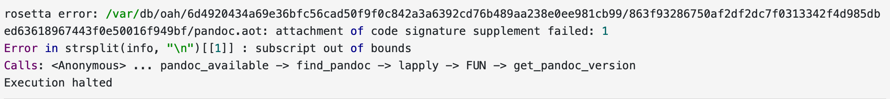
This error seems to arise for those using MacOS Ventura.
Solution: This solution is derived from this webpage, and is also described in this Piazza post.
- Close RStudio.
- Open a “terminal” window on your Mac (you can use the search tool to do this).
- Install “brew” by copying and pasting this in your terminal window:
/bin/bash -c "$(curl -fsSL https://raw.githubusercontent.com/Homebrew/install/HEAD/install.sh)"- then install “pandoc” by typing this in your terminal window:
brew install pandoc- if that’s successful, then open RStudio and type this in the command console:
Sys.setenv(RSTUDIO\_PANDOC="/opt/homebrew/bin")Now you should be able to knit an RMD file to PDF!
Rtools required during install
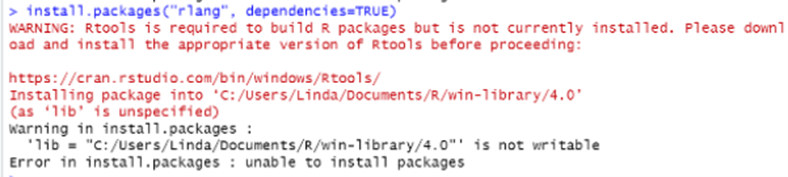
Solution: Head to this website and follow the instructions to download Rtools onto your computer. Then try re-installing the package again.
Could not find function
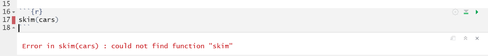
Solution: This error arises when you are trying to run a package, but you haven’t loaded the package yet. Therefore, R can’t find the function you are trying to use. To fix this error, load the package in an R chunk near the top of your RMarkdown document and then re-run your code. Do not load packages in the console! See a screenshot below.
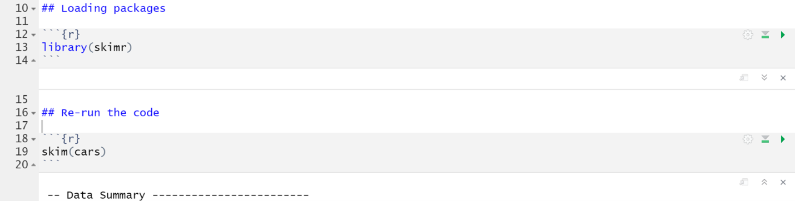
There is no package
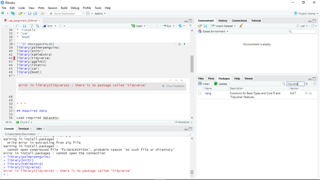
Solution: This error happens because the package has not yet been installed. To fix this error run the install.packages() function in the R console (NOT in the RMarkdown document!!). Then re-load the package using the library() function in the RMarkdown document (NOT in the console!!).
Trying to use CRAN without setting a mirror
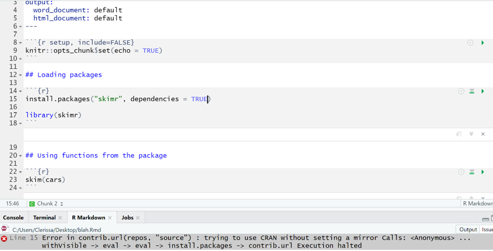
Solution: When we install packages in R, we need to do it in the console and not in the RMarkdown document because it causes this error when knitting. To fix this problem:
Remove the
install.packages()code from the RMarkdown documentInstall the package in the console
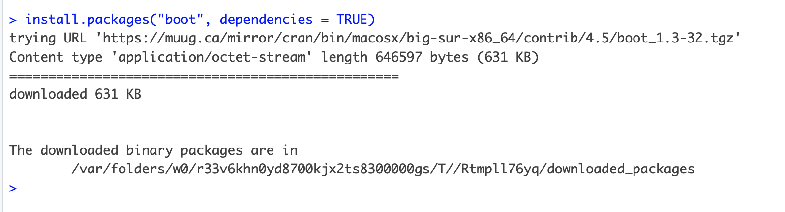
- Try re-knitting the RMarkdown document
PDF Latex is not found
Error: LaTeX failed to compile Practice_assignment.tex. See https://yihui.org/tinytex/r/#debugging for debugging tips. In addition: Warning message: In system2(..., stdout = if (use_file_stdout()) f1 else FALSE, stderr = f2) : '"pdflatex"' not found Execution halted
No LaTeX installation detected (LaTeX is required to create PDF output). You should install a LaTeX distribution for your platform: https://www.latex-project.org/get/
If you are not sure, you may install TinyTeX in R: tinytex::install_tinytex()
Otherwise consider MiKTeX on Windows - http://miktex.org
MacTeX on macOS - https://tug.org/mactex/ (NOTE: Download with Safari rather than Chrome _strongly_ recommended)
Linux: Use system package manager
Solutions:
Option 1: Run these commands in the R console (in this specific order!):
install.packages("tinytex", dependencies = TRUE)library("tinytex")install_tinytex()
Option 2: If you are using a Windows computer and option 1 didn’t work, try downloadingMikTeX. Then try knitting again.
Option 3: If you are using a Mac computer and option 1 didn’t work, try downloading MacTeX. Then try knitting again.
Option 4: If none of the above options work, knit your RMarkdown file to a Word document and then save it as a pdf.
Error in parse
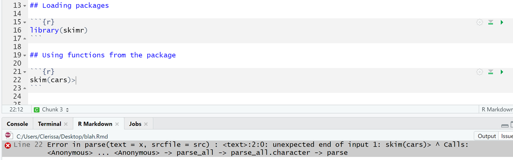
Solution: This type of error usually occurs when there is an unexpected symbol or character (ie. comma, semicolon, colon, bracket, etc.) in your code. In this case, I erroneously included a greater than sign (>) at the end of line. To fix this error, simply remove the unexpected symbol.
No such file or directory exists
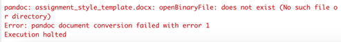
This error happens because in your RMarkdown document you refer to a file/folder, but that file/folder but R can’t find the file.
Solution: TBD
Messy output when loading packages
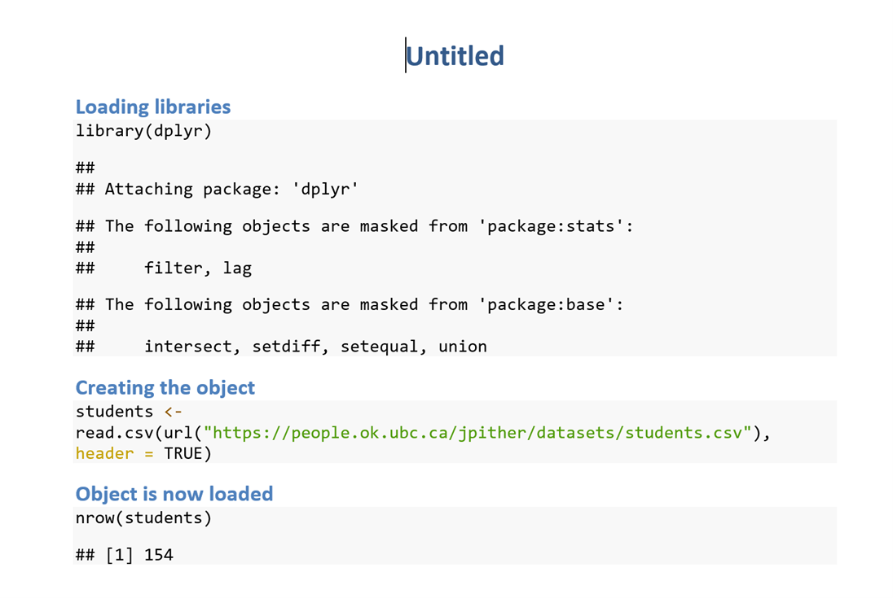
Solution: When you load packages in R, the knitted document will automatically show associated messages as output in your knitted document. This can make your assignment look messy when you are loading a bunch of packages. To hide these messages, add message = FALSE into the R chunk where you load packages. See the example below.
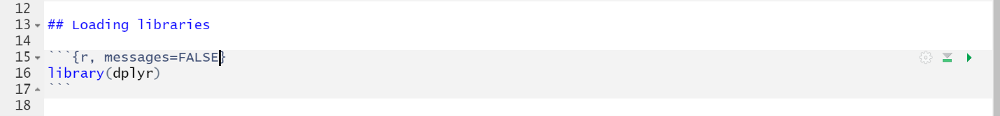
Unused argument
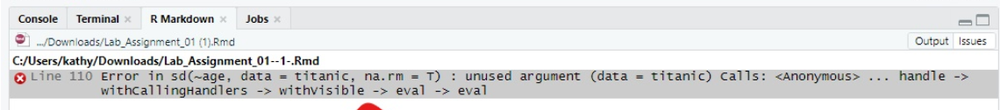
Solution: This error sometimes happens because the library() function is located below the line of code where a function is called on from that package. To fix this error, the library() function needs to be moved above the chunk where you use functions from that package. Best practice is to put it an R chunk at the top of your assignment (below the header) where you load all of the required packages for your assignment. See below for an example screenshot.
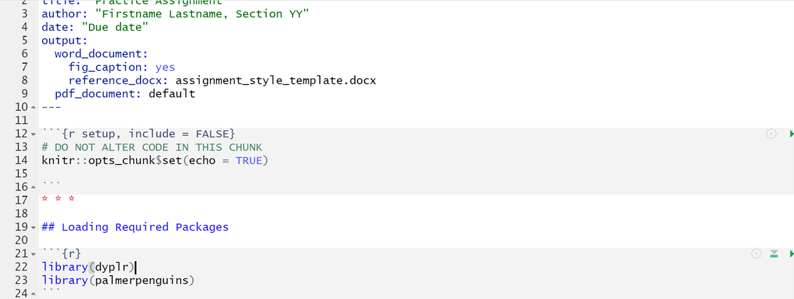
Object not found
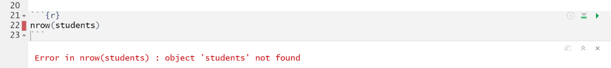
Solution: This error occurs when you’re ‘calling’ on an object in your code, but you haven’t actually created that object yet. As such, your computer can’t find the object. To fix this error, you should insert a line of code creating your object. Make sure the object is created BEFORE (on an earlier line of code) you try to use the function. See screenshot below.
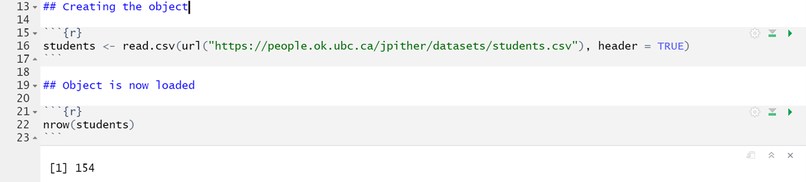
Figure caption doesn’t show up below figure in knitted document
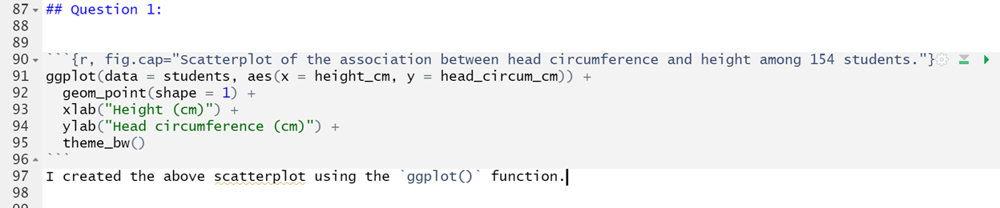
This error happens when you knit to PDF and your figure caption doesn’t show up despite having the correct code within your Rchunk.
Solution: One potential cause for this error is that you have text immediately below your R chunk. To fix this error, make sure there is a blank line between the end of your R chunk with the code for the figure and any subsequent text. See the screenshot below for an example with the blank line inserted.
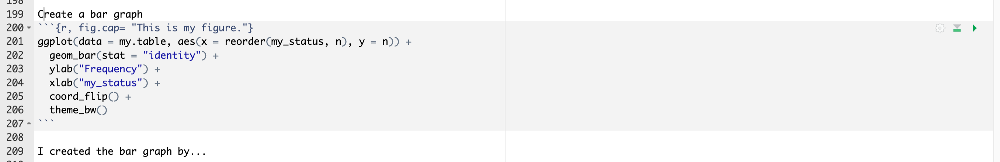
Notice the blank line at line 208 in the above screenshot.Figures are placed in weird spots in knitted PDF
This has to do with out the conversion process works, and can’t easily be helped. And nor does it really matter - you won’t lose marks for this. If you’re curious as to why this happens, consult this webpage.
Installing packages: there is a binary version available
If you are attempting to install a package (using install.packages) and you get this message:
There is a binary version available but the source version is later:
binary source needs_compilation
systemfonts 1.0.2 1.0.3 TRUE
Do you want to install from sources the package which needs compilation? (Yes/no/cancel)Respond with “no” (without quotes). Do NOT respond “Yes”.
Unicode knitting error
When you try to knit your markdown file, and you get an error that refers to a “Unicode character” like this:
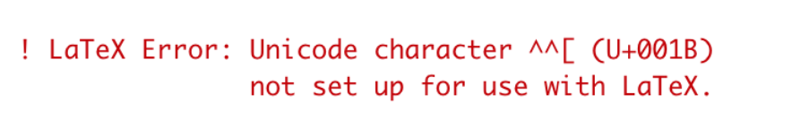
This means there’s a strange, non-simple text character somewhere in your RMD script. Mostly likely it is the result of copying and pasting text directly from the web into your RMD document. Common examples of troublesome characters include curly quotation marks and special symbols.
To troubleshoot, first go carefully through your RMD text to look for obviously strange characters.
If that doesn’t reveal anything, you’ll need to trysystematically knitting one section of your RMD document at a time. For example:
Open a blank text document alongside your current RMD file, and cut out one question/answer at a time, pasting into blank text document temporarily. Then try knitting your reduced RMD document, and if it works, paste the cut code back in to your RMD document. Then go to the next question and do the same thing. This will help isolate problem.